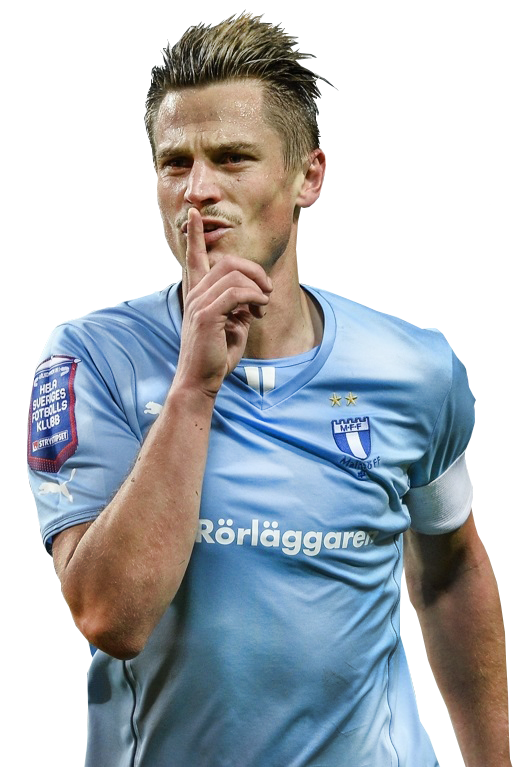

Östersunds FK bildades 1996.
Deras hemmamatcher spelas på Jämtkraft Arena, tidigare Hofvallen.
Deras slogan är "Vi ger aldrig upp."
Östersuns färger är röd och svart.
<<<<<<< HEAD =======
Hammarby Roddförening bildades den 10 april 1889 på Södermalm. 1897 uppgick Hammarby Roddförening i den nybildade föreningen Hammarby IF medan fotbollssektionen bildades 1915.
Hammarbys färger är grön och vit.
Deras största rivaler är historiskt sett är främst AIK och Djurgårdens IF.
Sedan 2018 är Stefan Billborn tränare för herrlaget.
Söderstadion är Hammarbys hemarena.
Ett historiskt ögonblick var när kungen Kenndey gjorde ett frisparksmål och fångade sedan en bärs från publiken.

Malmö Fotbollförening, ofta förkortat Malmö FF eller MFF, är en svensk fotbollsklubb, som debuterade i Allsvenskan säsongen 1931/1932. Sedan klubben grundades den 24 februari 1910[3] har den stått som seriesegrare i Allsvenskan 23 gånger och dessutom blivit svenska mästare 20 gånger samt vunnit Svenska cupen 14 gånger.
Malmö Fotbollförening, ofta förkortat Malmö FF eller MFF, är en svensk fotbollsklubb, som debuterade i Allsvenskan säsongen 1931/1932. Sedan klubben grundades den 24 februari 1910[3] har den stått som seriesegrare i Allsvenskan 23 gånger och dessutom blivit svenska mästare 20 gånger samt vunnit Svenska cupen 14 gånger.
Malmö FF
 =======